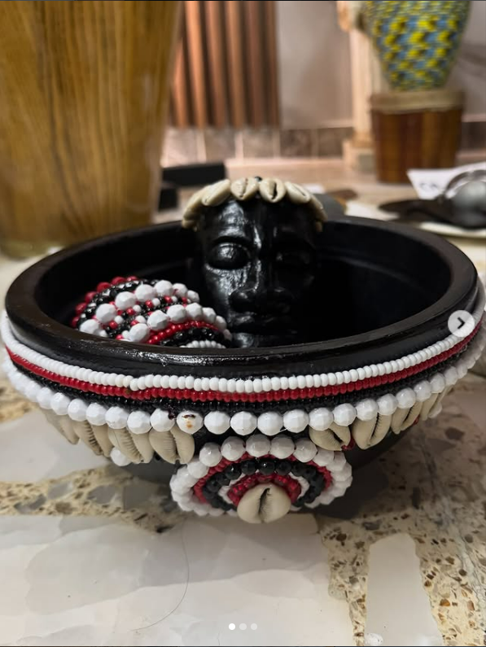
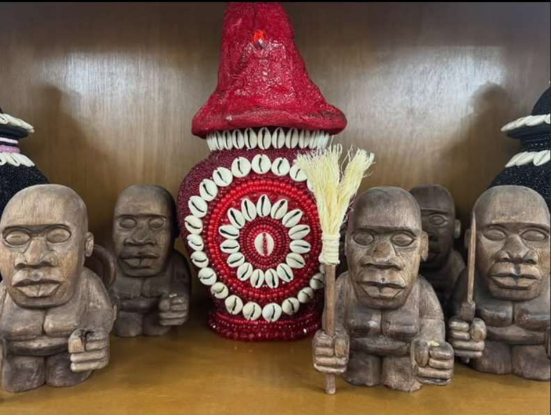

Amarre
Se hacen amarres para atraer al ser amado. Con el ceremonial se hará que la persona interesada siempre piense en uno, sienta la necesidad de buscarnos, y que la idea de la felicidad la asocie únicamente con nosotros.
Pedir infoTemplo Ile Ona Ire · Ciudad de México · Desde 2010
La mejor opción de Santería en CDMX.
¿Sientes que algo no fluye en tu vida? Mala suerte que no se va, envidias, sueños extraños, amores rotos. Aquí encuentras respuestas reales y trabajos auténticos de la religión Yoruba, conducidos por Babalawos e Olorishas formados en la tradición.
Solicitar una consultaLo que probablemente sientes
Sientes que alguien te observa al dormir. Tu pareja se alejó sin razón aparente. El dinero se va aunque trabajes el doble. Sueñas con personas muertas. Sientes envidia a tu alrededor y todo se traba. Has probado de todo, y nada te funciona espiritualmente.
Lo que sientes tiene nombre. Y tiene solución.

Conócenos
Conoce al máximo la religión Yoruba con la correcta práctica de la misma.
Somos un templo en Ciudad de México guiado por Babalawos e Olorishas formados en la tradición, donde la palabra ashé no es un adorno: es el resultado de cada ceremonia.
Atendemos a personas que llegan con dudas, miedo o desesperación. Salimos a resolver con respeto, discreción y verdad. No vendemos milagros: trabajamos con los Orishas y los espíritus que han acompañado a la humanidad por siglos.

Haz una consulta
Las consultas tienen la finalidad de saber qué es lo que está pasando la persona, por qué está pasando por todo esto, y qué es lo que debe hacer para mejorar la situación.
Se brinda información sobre la persona, las personas que la rodean, su casa, su trabajo, su salud, e inclusive sobre situaciones del pasado: todo este tipo de información estará siendo brindada en la consulta.
Agendar una consultaNuestros trabajos
Se hacen amarres para atraer al ser amado. Con el ceremonial se hará que la persona interesada siempre piense en uno, sienta la necesidad de buscarnos, y que la idea de la felicidad la asocie únicamente con nosotros.
Pedir infoRealizada por un Babalawo que con el oráculo de IFA (Ekuele) hace la adivinación. Ifa es el Orisha encargado de conocer el destino en la tierra de todos los seres humanos.
Pedir infoCollares, pulseras y todo tipo de ceremonias para proteger a las personas, fundamentadas con ceremonia. Cada persona tiene la protección específica que ayuda a su situación.
Pedir infoLas limpias nos ayudan a desprender todo este tipo de energías negativas. Una vez que tu energía está limpia, todo empieza a fluir correctamente. Personas, autos, casas, negocios.
Pedir infoRealizada por medio de Diloggun (caracol) en Eleggua, Orisha encargado de presentar ante nosotros toda la situación de la persona. Tiene la llave de los caminos y los abre o cierra a voluntad.
Pedir infoRealizada con un tarotista con el estudio para la correcta interpretación en las cartas, así como la espiritualidad para ser eficaz al brindar el apoyo al consultante.
Pedir infoEntrega de Guerreros, Orishas de adimu, collares. Los Guerreros son los primeros Orishas que debe recibir el aleyo interesado en traer a la regla de osha: dan protección, apoyo, abren caminos y bendicen.
Pedir infoCoronación del santo (Yoko Osha): la iniciación más importante de la regla de osha. Cada persona tiene un Orisha Alagbatori, y este es el Orisha que se corona. La persona pasa de aleyo a iyawó.
Pedir infoEl rayamiento de Ngueyo es la protección y primera iniciación principal de todo Ngangulero. Es un pacto donde los espíritus acuerdan proteger y levantar la situación de la persona iniciada a la máxima brevedad.
Pedir infoContamos con músicos para el toque a tus Orishas, Ngangas o espíritus, para agradecer un favor obtenido o pedir por una situación realmente fuerte, como vencer alguna dificultad grande.
Pedir infoAprenderás a tocar tambor (congas), claves, cencerro, redoba, campanas y más. Toques que pueden usarse en una misa espiritual, en una ceremonia de palo mayombe o un toque a Orishas.
Pedir infoSesiones para desarrollar a la materia (persona) y mejorar la percepción espiritual. Si se tiene el camino, también se prepara para bajar muerto.
Pedir infoInformación
Contamos con Mediums para conocer cualquier tipo de situación espiritual. Si en la noche te sientes que ni se tiene descanso, que alguien nos observa, que tenemos preocupaciones que no pasan o sueños recurrentes, esta es la herramienta religiosa para mejorar la situación y ascender espiritualmente.
Los espíritus también determinan muchas de las cosas que hacemos, gustos que tenemos o hasta actitudes nuestras. Una misa espiritual da luz a todo ese tipo de respuestas, dictaminado por energías que están con cada uno de nosotros desde antes de nacer.
Agendar una misa espiritual@ileonaire en TikTok
Toques, ceremonias y momentos del templo. Síguenos para ver más contenido auténtico.
@ileonaire Yewá #santeria #yewa #ashe
@ileonaire Toque de Güiro
@ileonaire Añá
@ileonaire La presentación del Iyawo
@ileonaire Próspero año nuevo. Ache.
@ileonaire Toque de tambor a Oshún
Lo que se dice del templo
"Llegué deshecha después de una ruptura horrible. La consulta con caracol me dijo cosas que nadie sabía. A los dos meses ya estaba reconstruyendo mi vida."
"El amarre fue real. Mi pareja regresó a las pocas semanas y ya no se ha alejado. Lo más importante: el padrino te explica todo antes, sin engaños."
"Mi negocio estaba parado, sentía pesado el local. Hicimos limpia y entregaron protección. En tres semanas las ventas subieron y volvieron los clientes."
"Recibí mis Guerreros aquí. Todo con respeto y fundamento, nada inventado. Se siente la diferencia con otros lugares que solo cobran sin ceremonia real."
"Tenía pesadillas todas las noches y sentía que algo me veía. Después de la misa espiritual descansé como en años. Gracias infinitas."
"Llegué de aleyo sin entender nada y hoy soy iyawó. El templo te enseña con paciencia. La iniciación cambió por completo mi camino."
Preguntas frecuentes
Sí. Cada consulta es privada. Lo que se dice y se hace dentro del templo se queda dentro del templo. Atendemos con respeto sin importar tu religión actual.
Por WhatsApp al 56 1235 0083. Te asignamos día y hora. Las consultas son lunes y sábados.
Solo tu intención y honestidad. Los Orishas y los espíritus dicen lo que tienen que decir. Tú llegas, escuchas, preguntas y decides.
Sí, atendemos consultas presenciales en CDMX y a distancia para personas en otros estados o países. Pregúntanos por WhatsApp.
Cada trabajo tiene su derecho según la ceremonia. Te damos información clara antes de cualquier paso. Sin sorpresas.
Depende del trabajo y de la situación. Algunas limpias se sienten desde el mismo día; otros trabajos necesitan ciclos para asentarse. Lo importante es que el fundamento esté bien hecho.
El siguiente paso
No esperes a que las cosas empeoren. Agenda tu consulta y deja que los Orishas te muestren el camino.
Agendar mi consulta Respuesta en menos de una hora en horario de atención.